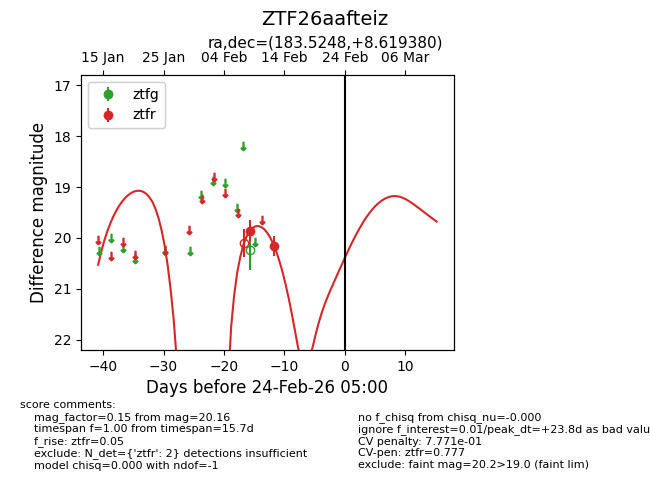
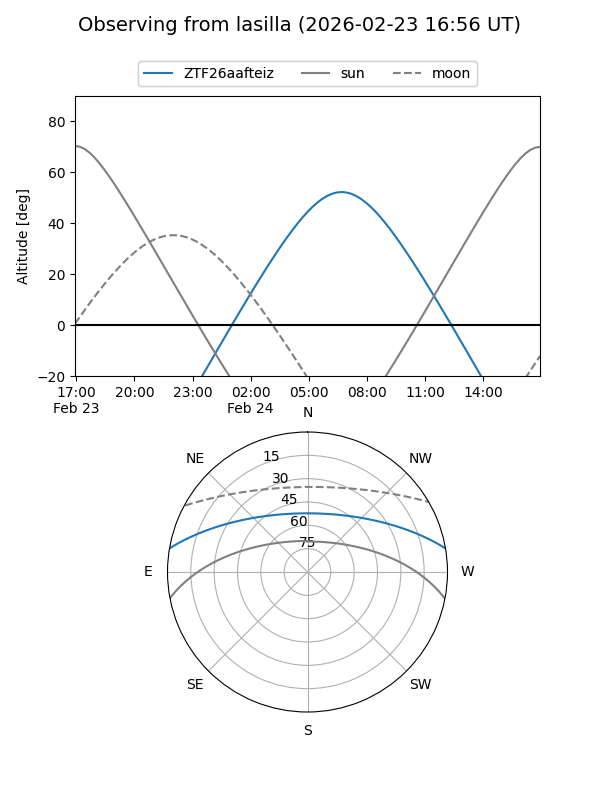
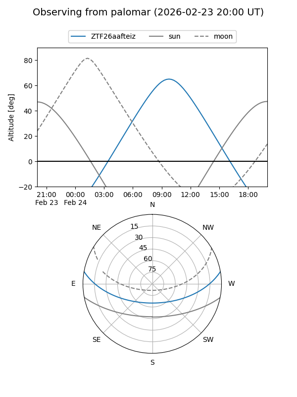

ZTF26aafteiz
Target ZTF26aafteiz at 2026-02-24 09:08
Aliases and brokers:
FINK: link
Lasair: link
ALeRCE: link
alt names
ZTF26aafteiz (ztf,fink_ztf)
Coordinates:
equatorial (ra, dec) = 183.5248,+8.61938
equatorial (HMS+DMS) = 12:14:05.95,+08:37:09.77
galactic (l, b) = (275.6899,+69.49182)
Flags:
likely cv
Photometry:
last ztfr=20.16
2 ztfr detections
Lightcurve

Visibility


Additional plots